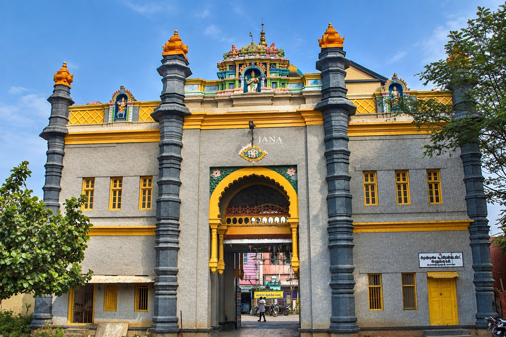

GEOGRAPHIC IDENTITY
Flanked by the calm shallow Palk Bay on the north and the biodiverse Gulf of Mannar on the south, Ramanathapuram boasts Tamil Nadu's longest continuous marine coastline.
A Coastal Sanctuary
Covering 4,068.31 square kilometers, Ramanathapuram is characterized by expansive salt pans, coconut groves, coastal dunes, and fertile delta pockets along the Vaigai river basin.
Its crown jewel is the Gulf of Mannar Biosphere Reserve, India’s first marine national park, sheltering over 3,600 species of flora and fauna, including endangered sea cows (Dugong dugon), coral reefs, sea turtles, and pristine mangrove islets.
THE SETHUPATHI DYNASTY
Kings of Sethu Samasthanam whose courage, patronage, and piety protected the pilgrim causeway and patronized temple art for centuries.
The title "Sethupathi" literally translates to "Lord of the Causeway". The Sethupathi rulers of Ramanathapuram held solemn custody of the sacred Rama Sethu bridge, safeguarding millions of pilgrims traversing southern India to Rameswaram.
Under prominent rulers such as Kilavan Sethupathi and Muthuramalinga Sethupathi, Ramanathapuram flowered into an independent kingdom celebrated for its architectural triumphs. The monumental third corridor of Ramanathaswamy Temple was constructed under the generous patronage of Muthuramalinga Sethupathi between 1763 and 1768.
The royal palace—Ramalinga Vilas—stands in Ramanathapuram town to this day, featuring rare 18th-century mural frescoes portraying royal ceremonies, European ambassadors, and celestial battles.
HISTORICAL TIMELINE
Six definitive eras that shaped the modern district of Ramanathapuram.
Mentioned in early Tamil Sangam literature as part of Pandyan kingdom's coastal heartland. Ancient ports like Periyapattinam and Kilakarai traded pearls, spices, and textiles with imperial China, Arabia, Rome, and Sri Lanka.
Raghunatha Kilavan Sethupathi shifted the capital from Pogalur to Ramanathapuram, fortifying the city with stone ramparts. The kingdom became a sovereign power patronizing Tamil poets, Dravidian stone architecture, and sea trade.
The British East India Company took over revenue administration in 1795, reducing the royal state to a Zamindari estate. In 1914, the historic Pamban Cantilever Railway Bridge opened, revolutionizing pilgrimage and trade with Ceylon.
Ramanathapuram District was officially created by bifurcating portions of Madurai and Tirunelveli districts in October 1910 under the Madras Presidency, encompassing a massive expanse from Virudhunagar to Sivaganga.
On March 15, 1985, the sprawling greater Ramanathapuram district was trifurcated by the Government of Tamil Nadu into three independent districts: Pasumpon Muthuramalingam (now Sivaganga), Kamarajar (now Virudhunagar), and present Ramanathapuram.
Today, Ramanathapuram stands as a premier coastal tourism hub, celebrated for sustainable marine bio-reserves, coastal fishing industries, solar and green energy projects, the new Pamban vertical lift bridge, and the revered memorial of Dr. A.P.J. Abdul Kalam.